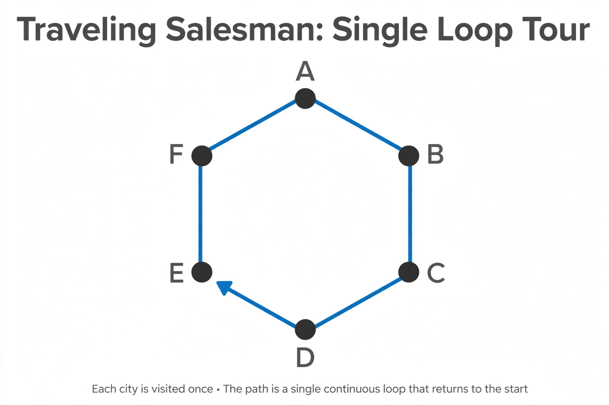

Travelling salesman problem

[Image: Dots for cities connected by a single looping tour line]
The travelling salesman problem asks: given a list of cities and the distances between them, what is the shortest route that visits each city exactly once and returns to the start? Despite its humble statement it is one of the most studied problems in optimisation.
The problem is NP-hard: the number of candidate tours grows factorially, and no efficient exact algorithm is known. Yet heuristics and approximation methods routinely find near-optimal tours with millions of cities, and exact records have been pushed to tens of thousands of cities by specialised solvers.
History and reach
The problem appears in print by the 1830s in a German handbook for travelling salesmen, and was given mathematical form in the 1930s. Its fingerprints are everywhere: drilling circuit boards, sequencing DNA fragments, planning delivery rounds and scheduling telescope observations all reduce to it or its variants.
The best possible polynomial-time approximation guarantees are bounded by theory (related to the metric structure of distances), making TSP a benchmark for both algorithms and complexity theory.